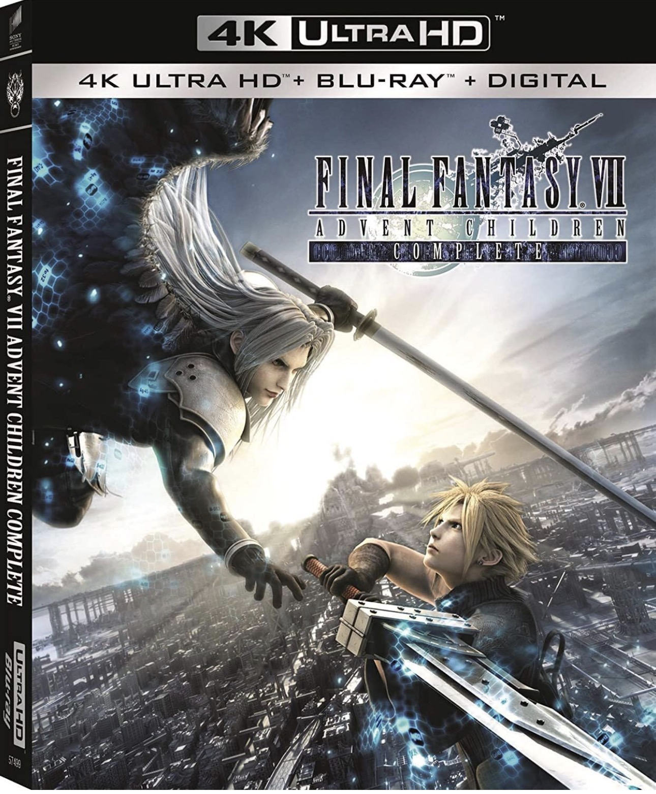

|  |
If I were to elaborate on the original Final Fantasy VII, I would describe how much of an intricate game it was. Loguidice and Barton continues “The highly polished game-play, lavish production, intricate storyline, and well-developed characters all contribute to the game's high playability, then and now.” Even the game play was off the charts, so much so that a movie was created called Final Fantasy VII: Advent Child. (At this point, I am still trying to look for that movie. It is not simple).